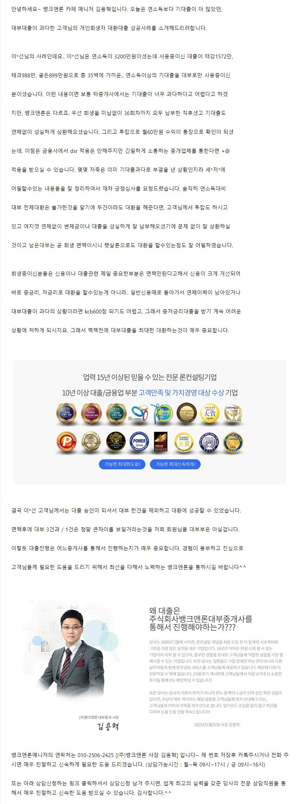
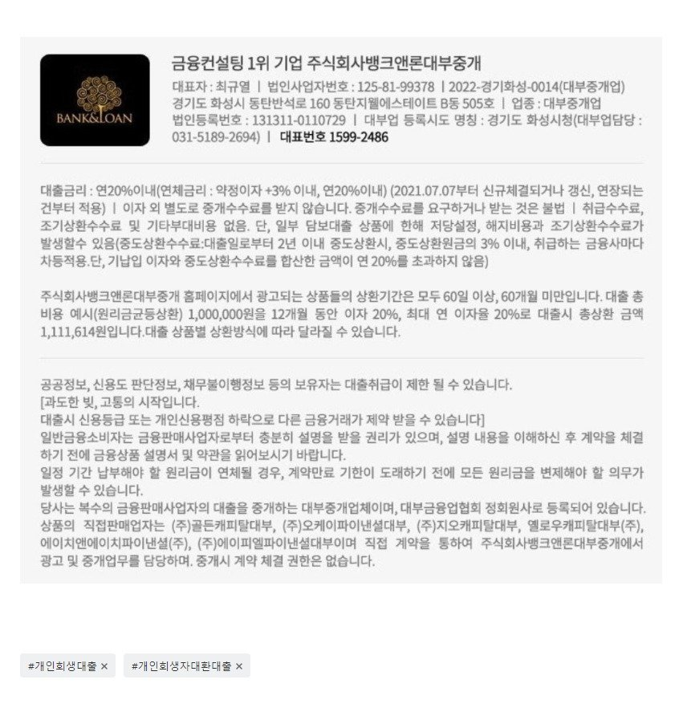

대출사례[회생대출사례] 연소득대비 대부과다이용고객 저*은*으로 대환성공사례원본 등록일 2025.03.10 · 글 번호 3197 · 백업 당시 조회수 946  상담신청 -> https://cafe.naver.com/cityman88/29497 (365일 24시간 언제든 상담신청가능)https://cafe.naver.com/cityman88/307214 [출처] [https://cafe.naver.com/cityman88/307214] 연소득대비 대부과다이용고객 저*은*으로 대환성공사례 (뱅크앤론 - 개인회생자대출 및 일반 신용, 담보 대출. 뱅크앤론) | 작성자 뱅크앤론 매니저